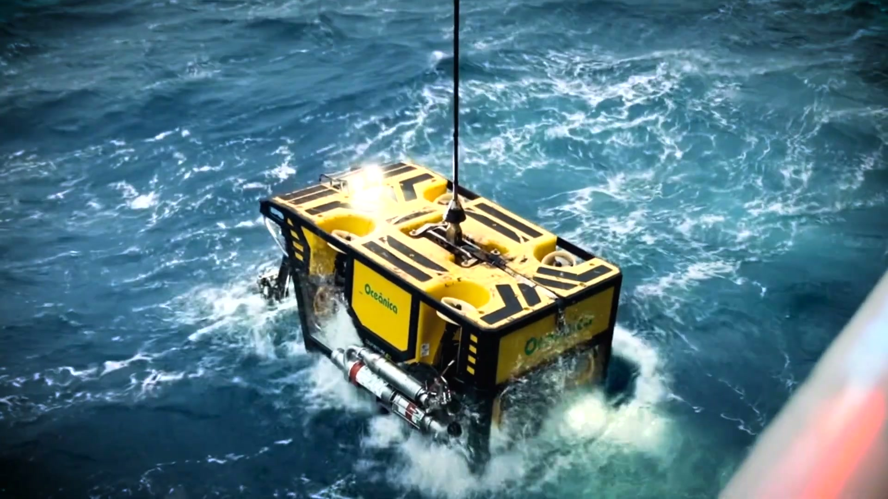
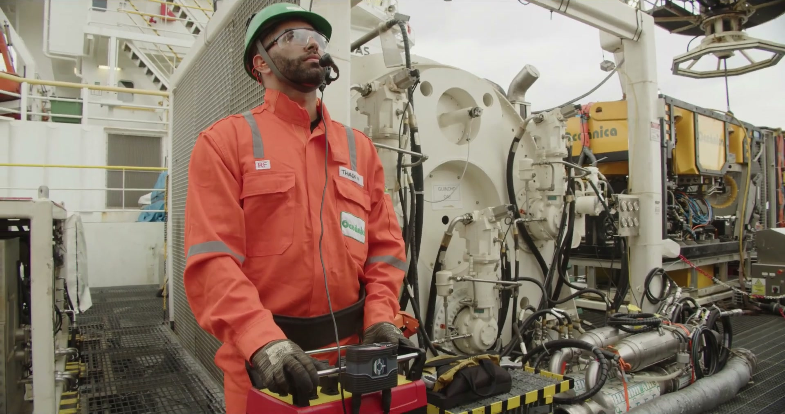
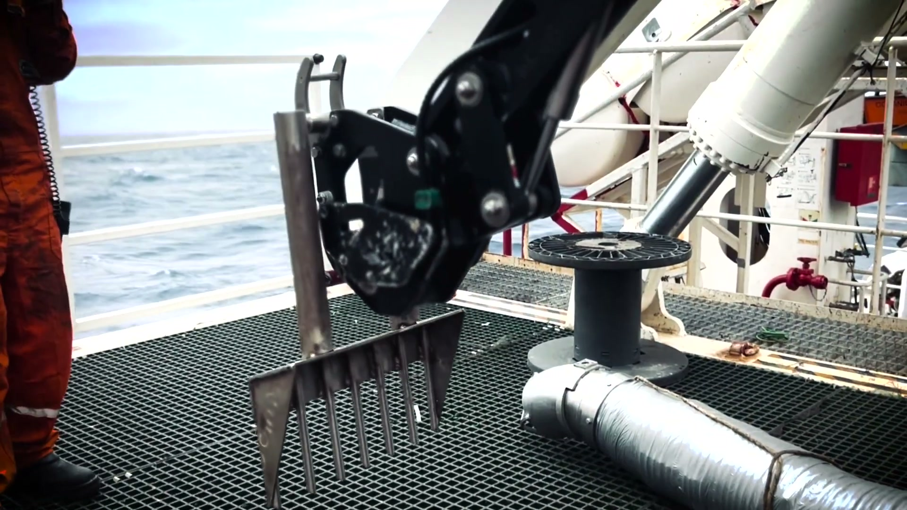
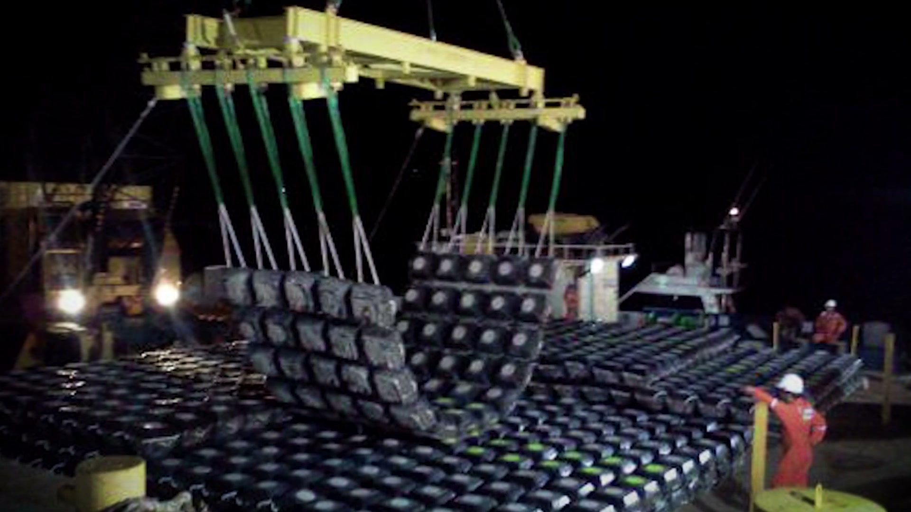
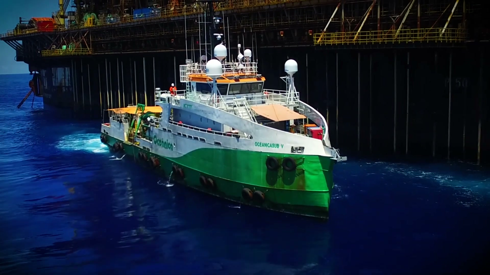

Ato 1 · 0 m
Embarcações
Grande na superfície.
A proa vem de frente. Escala, presença, frota. O título ocupa a tela.
Passagem: a câmera desce pelo casco até a linha d'água.

Ato 2 · mergulho
Mergulhadores
Ninguém desce sozinho.
Um rosto dentro do capacete. Coragem e ofício: a operação tem gente.
Passagem: a luz do capacete estoura o quadro e vira os faróis do ROV.


Ato 3 · até 3.000 m
ROVs
Onde o corpo para, a máquina continua.
O ROV entra na água e a garra fecha em macro. Profundidade e precisão.
Passagem: a garra fecha; corte seco para a mão do piloto.

Ato 4 · de volta ao convés
Tecnologia
A mão que trabalha a 3.000 metros está aqui em cima.
Primeira revelação: a máquina é uma pessoa no comando. Sistemas, controle, formação.
Passagem: do controle para a mesa, para a ferramenta, para o convés inteiro.


Ato 5 · o plano
Engenharia
Nada disso é improviso.
Ferramenta projetada em casa, içamento planejado, equipe na mesa. O que une os outros quatro.
Passagem: a câmera abre. É o material mais fraco hoje (só V1).

Fecho · 0 m outra vez
A revelação
Maior abaixo dela.
Uma embarcação da frota junto a uma unidade de produção, em mar aberto. A superfície de novo, agora com tudo o que há embaixo. Entram os três números.
A hero termina e a página continua.